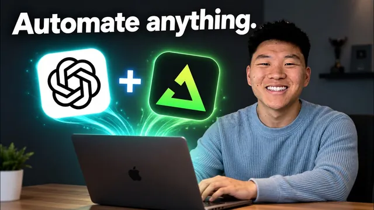

사용량 안 잡아먹는 GPT-6 Astra 자동화 만들기

원본 영상 보기 →
- 자동화를 만드는 도구와 실행하는 도구를 분리하라
- 결정론적 vs 비결정론적을 먼저 판단하고 설계 방식을 정하라
- API 키는 플러그인이 아니라 `.env` 파일에 모아두면 이식성이 좋아진다
한 줄 요약
Codex 자동화를 계속 켜두면 구독 사용량이 깎이므로, 대신 Codex로 자동화 코드를 만들어 trigger.dev(GitHub 연동)에 올려 독립 실행시키는 3가지 자동화 패턴(예약형·웹훅형·SDK형)을 실습으로 보여주는 영상.
전체 내용 정리
Codex 안에서 자동화를 계속 돌리면 구독 사용량이 줄어든다
Codex 안에 예약 작업(scheduled task)을 만들어 두면, 이 작업은 실제로 채팅 스레드에 메시지를 보내는 방식으로 동작하기 때문에 매번 실행될 때마다 주간 사용량 한도를 갉아먹는다. 그래서 개인·회사용 자동화를 전부 Codex 안에서 상시로 돌리는 건 비효율적이다. 대신 실제로 유용한 자동화 대부분은 Codex 바깥의 독립된 환경에서 돌려도 되고, Codex는 그 자동화를 "만드는" 용도로만 쓰면 된다. Codex로 자동화 로직을 작성하면 그걸 코드로 변환해 GitHub에 올리고, trigger.dev가 그 코드를 GitHub에서 가져와 정해진 스케줄이나 이벤트에 맞춰 실행해준다. 이렇게 하면 Codex 구독 사용량 게이지가 거의 안 줄어든 채로 유지된다. 필요한 준비물은 Codex 구독, trigger.dev 계정, GitHub 계정 세 가지뿐이다.
세 가지 자동화 유형: 예약형, 웹훅형, SDK형
영상은 자동화를 세 종류로 나눠 설명한다. 첫째는 예약 자동화(scheduled automation)로, trigger.dev가 코드를 30분마다·매주 월요일 오전 6시처럼 정해진 시간에 실행시키는 방식이며 Codex의 스케줄 작업과 개념이 비슷하다. 둘째는 웹훅 자동화(webhook automation)로, 폼 제출 같은 특정 이벤트가 발생했을 때 트리거된다. 셋째는 Codex SDK 자동화로, 예측 불가능한 흐름을 반복적으로 오가야 하는 완전한 에이전트 루프가 필요할 때 쓴다.
결정론적 자동화 vs 비결정론적 자동화를 구분하는 게 핵심
자동화를 설계할 때 가장 중요한 기준은 그 프로세스가 예측 가능한가(결정론적, deterministic) 아니면 예측 불가능한가(비결정론적, non-deterministic)이다. 예를 들어 "아침 6시에 캘린더 확인 → 필요하면 리서치 → 브리핑 문구 작성 → ClickUp으로 전송"이라는 흐름은 단계 순서가 매번 똑같이 1→2→3→4→5로 진행되므로 결정론적 자동화다. 이 중 AI가 개입하는 단계(리서치 여부 판단, 메시지 초안 작성)만 입력값에 따라 결과가 달라질 뿐, 전체 플로우 자체는 항상 같은 순서로 흐른다. 반대로 흐름이 완전히 예측 불가능해서 에이전트가 조사→재조사→재판단을 몇 번이고 왔다 갔다 해야 하는 경우엔 진짜 에이전틱 하네스(agentic harness), 즉 Codex의 완전한 루프가 필요하다. 실제 업무·개인 생산성 자동화의 90%는 결정론적인 쪽에 가깝기 때문에, 자동화가 결정론적일수록 굳이 Codex의 풀 에이전트 루프를 써서 호스팅하는 건 낭비라는 게 핵심 메시지다.
예약형 자동화 실습 — 아침 캘린더 브리핑 만들기
실습은 "매일 아침 6시에 오늘 구글 캘린더 일정을 확인해서 브리핑을 만들어 달라"는 요청을 Astra와 기획 단계부터 함께 진행하는 방식으로 진행된다. Astra는 필요한 정보(전송 방식, 타이밍, 캘린더 범위, 리서치 예산 등)를 먼저 되물어 확인한다. 영상 속 답변은 ClickUp으로 자신에게 DM 전송, 평일 오전 6시(±10분 정도는 허용), 업무용 메인 캘린더 기준, 리서치는 웹 검색 위주로 러닝당 25센트 한도로 설정한다. 플랜이 확정되면 Codex가 설계도를 제시하는데, 이때 trigger.dev 무료 플랜에서는 스케줄 시작이 최대 1시간까지 밀릴 수 있다는 호스팅 관련 제약도 함께 알려준다. 이후 Codex가 실제 코드를 작성하고 로컬에서 테스트 주도 개발(TDD) 방식으로 검증까지 마친 뒤에야 trigger.dev로 옮긴다. 여기서 API 키·시크릿은 .env 파일에 모아두고, 이 값들은 Git에 올라가지 않으므로 trigger.dev 쪽 환경변수에는 수동으로 옮겨 입력해야 한다.
Codex와 trigger.dev·GitHub 연결, 그리고 실전에서 만난 두 가지 버그
Codex는 CLI를 통해 GitHub와 trigger.dev에 각각 로그인·인증하고, 새 프라이빗 리포지토리를 만들어 코드를 올린 뒤 trigger.dev 프로젝트와 그 리포지토리를 연결한다. 이 과정에서 Codex는 필요하면 브라우저를 직접 조작해 trigger.dev 대시보드의 설정(GitHub 연동 여부 확인 등)까지 스스로 점검한다. 실제 배포 후 trigger.dev에서 첫 테스트 실행을 했을 때 ClickUp 메시지가 오지 않는 문제가 발생했는데, 원인은 "morning brief" 관련 환경변수가 false로 설정돼 있었던 것이었다. 이를 true로 바꾸고 재실행했더니 이번엔 "오늘 이미 같은 메시지를 보낸 이력이 있어 중복 발송을 건너뛰었다"는 안내가 나왔다 — 이는 버그가 아니라 자동화에 내장된 중복 방지 로직이 의도대로 작동한 것이었다. 강제로 중복 방지를 무시하게 해서 실제로 ClickUp에 메시지가 도착하는 것까지 확인한 뒤 예약을 켰다.
웹훅형 자동화 실습 — 폼 제출로 리드 알림 자동화
두 번째 실습은 웹사이트에 있을 법한 간단한 폼(이름, 이메일, 팀 규모, 원하는 내용)을 만들고, 사용자가 제출(submit)하면 trigger.dev의 백엔드 자동화가 실행되어 "새 폼 제출이 있었다, 누구인지, 무엇을 원하는지, 어떻게 연락하면 좋을지"를 정리한 ClickUp DM을 보내주는 구조다. 이 자동화도 AI가 관여하긴 하지만 흐름 자체는 여전히 결정론적이다. 만약 AI 생성 메시지 없이 그냥 "새 제출이 있다"는 알림만 원한다면 플레이스홀더만으로 100% 결정론적으로 만들 수도 있다고 설명한다. Codex는 로컬 폼 페이지와 trigger.dev 백엔드를 함께 만들고 자체적으로 여러 차례 테스트한 뒤, 실제로 폼에 이름·이메일·팀 규모·요청 내용을 입력해 제출하자 trigger.dev에서 실행 로그가 뜨고 ClickUp에 정리된 리드 알림과 추천 아웃리치 문구가 도착하는 것까지 확인한다. 영상은 이 웹훅 트리거가 폼 제출뿐 아니라 CRM 신규 레코드, 신규 이메일 수신 등 다양한 이벤트 기반 자동화에도 같은 패턴으로 쓰일 수 있다고 덧붙인다.
SDK형 자동화 실습 — 완전한 에이전트 루프가 필요한 트레이딩 리서치 봇
마지막은 Codex SDK를 활용해 이미 운영 중이던 완전 에이전틱 루틴(30분마다 깨어나 Alpaca 계좌를 확인하고, 과거 로그를 참고하고, 리서치를 반복하다 필요하면 다시 확인하는 트레이딩 리서치 에이전트)을 trigger.dev로 옮기는 사례다. 이 루틴은 리서치를 몇 번 반복할지, 언제 충분하다고 판단할지가 매번 달라지는 비결정론적 흐름이라 SDK 기반 에이전트 루프가 필요하다고 설명한다. Codex는 이 과정을 위해 check(실제 스케줄에서 도는 반복 워커), install-plan(설치용), pre-flight(런타임·Alpaca 연결·마켓 데이터·정책 파일 점검), proof(실제 리서치·리포팅·이메일·ClickUp 발송까지 전 과정을 테스트 라벨로 검증, 테스트 중엔 실거래 방지) 이렇게 네 개의 작업(task)으로 나눠 구축했다. 최종적으로 check가 장 마감/개장 시간대에 맞춰 리서치하고, 결론을 이메일로 정리해 "Grockbot"(트레이딩을 대신 실행해주는 봇 — OpenAI·Claude 계열 모델은 보안 정책상 실제 매매를 실행하지 않기 때문에 별도로 둔 트레이딩 실행용 봇)에게 전달하면 Grockbot이 실제 주문을 넣는 구조로 완성된다. 다만 이렇게 SDK로 API 기반 호출을 하면 구독으로 쓰는 것보다 비용이 더 들기 때문에, Codex 구독 한도 안에서 돌려도 충분한 루틴이라면 굳이 SDK로 옮기지 말고 그냥 Codex 스케줄 작업으로 남겨두는 걸 추천한다고 강조한다.
핵심 인사이트
- 자동화를 만드는 도구와 실행하는 도구를 분리하라: Codex(또는 어떤 AI 코딩 에이전트든)는 자동화를 "설계·구현·검증"하는 데 쓰고, 실제 상시 실행은 trigger.dev 같은 별도 호스팅 서비스에 맡기면 구독 사용량을 갉아먹지 않으면서도 자동화 개수를 계속 늘릴 수 있다.
- 결정론적 vs 비결정론적을 먼저 판단하고 설계 방식을 정하라: 업무 자동화의 90%는 "항상 같은 순서로 흐르는" 결정론적 프로세스이며, 이런 건 굳이 풀 에이전트 루프 없이 스크립트+부분적 AI 스텝으로 구현하는 게 더 저렴하고 안정적이다(실제로 저자는 과거 결정론적 작업을 순수 에이전트로 돌렸다가 한 달 뒤 엉뚱한 채널로 메시지를 보내는 사고를 겪었다). 진짜 예측 불가능한 반복·재판단이 필요한 경우에만 SDK 기반 에이전트 루프를 쓰면 된다.
- API 키는 플러그인이 아니라
.env파일에 모아두면 이식성이 좋아진다: Codex 플러그인으로 연결한 계정 인증은 trigger.dev 같은 외부 호스팅으로 그대로 옮겨지지 않는다. 반면.env에 키를 모아두면 다른 실행 환경으로 옮길 때 그대로 복사해서 쓸 수 있어 자동화를 여러 플랫폼으로 이식하기 쉽다. - 자동화를 넘기기 전에 "스스로 검증"시키는 습관이 실패를 줄인다: 로컬에서 테스트 주도 개발로 먼저 검증하고, 배포 후에도 실제 실행 로그를 보며 디버깅하는 과정을 거치면(이 영상에서도 환경변수 플래그 오류, 중복 발송 방지 로직 등 실제 문제를 이렇게 잡아냈다) 사람이 매번 붙어서 감시하지 않아도 신뢰할 수 있는 자동화가 된다.
오늘 당장 해볼 것
- 지금 운영 중인 반복 업무(캘린더 브리핑, 리드 알림, 리포트 발송 등) 중 "항상 같은 순서로 진행되는" 결정론적 작업이 있는지 하나 골라 목록으로 정리해본다.
- 그 작업이 지금 AI 채팅형 도구(Codex, Claude 등) 안에서 상시로 돌아가고 있다면, trigger.dev 같은 외부 호스팅 서비스로 옮겨서 구독 사용량을 아낄 수 있는지 검토해본다(무료 플랜으로 우선 테스트 가능).
- 자동화 담당 업체·개발자에게 "이 자동화는 결정론적인가요, 아니면 매번 판단이 달라지는 에이전트형인가요?"를 물어보고, 결정론적인 작업에 불필요하게 비싼 에이전트 루프 비용을 내고 있지 않은지 확인해본다.